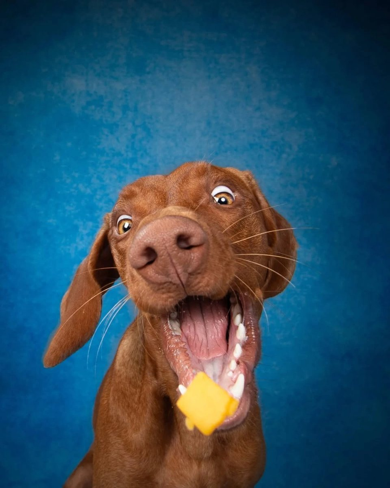

Z lesa
Z lesaJeleň
Divina z lesa. Chudé, výrazné mäso s jediným zdrojom bielkovín.
Nehľadáme najlacnejšiu cestu k plnému vrecku. Hľadáme suroviny, ktoré majú v miske zmysel. Z nich potom vyberieme granule presne pre tvojho psa.

Žiadne „mäso a mäsové deriváty“. Ktoré mäso dostane tvoj pes, vyberieme podľa veku, veľkosti a pohybu tvojho psa.
Z lesaDivina z lesa. Chudé, výrazné mäso s jediným zdrojom bielkovín.
 Z lúky
Z lúkyJemné, ľahké biele mäso pre citlivé bruchá.
 Z dvora
Z dvoraChudá hydina plná bielkovín.
 Z dvora
Z dvoraPlnšia chuť hydiny, ktorú psy milujú.
 Z pastvy
Z pastvyPre psov, ktorým nesedí každé mäso.
 Zo Slovenska
Zo SlovenskaSlovenské hovädzie. Klasika plná bielkovín.
Suroviny, ktoré na bežnej etikete nenájdeš.